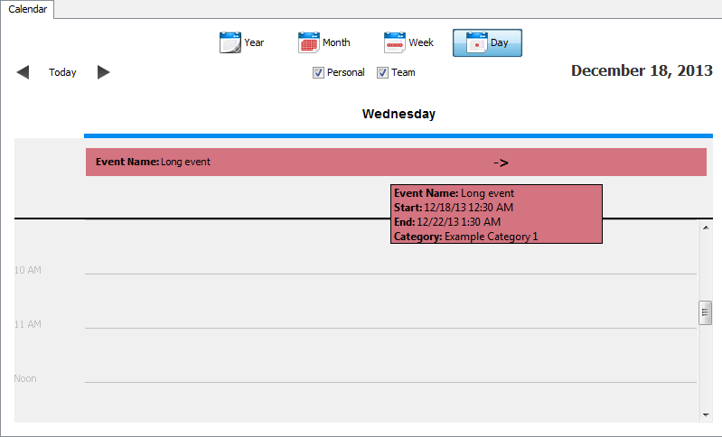
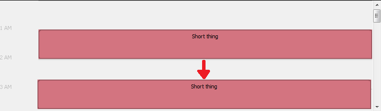

In day view, you can view your schedule in in hourly blocks, and rearrange events and commitments.
The day view has a Forward, Back and Today button located at the top left corner of the calendar. Forward and Back will go the next or previous day,
respectively. Today will instantly return the view to today's date.
In day view, commitments and events that has been scheduled that day are shown as blocks at covering the times they occupy,
and are highlighted with the color of the category they belong to.
Multi-day events are shown in day view as banners across the top of the panel. To see details about the event, hover your mouse over
it until a tooltip appears.

You can easily rearrange your event and commitments by dragging them to a new position on the calendar and dropping them. Simply click and
hold on the event's block, and release the mouse button after moving it to its new time.
